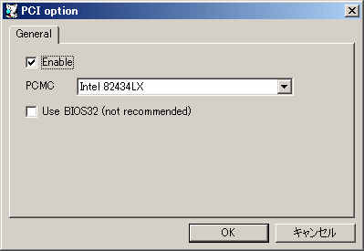

チェックを入れるとPCIバスが有効になります。この設定はリセット後に反映されます。
Win9xでセットアップ後にPCIを有効にした場合、手動でPCIバスのドライバを追加する必要があります。追加した後はプラグアンドプレイでPCIデバイスが自動追加されます。
Win2000の場合は後からPCIバスの有無を変更することは出来ません（起動時にブルースクリーンになります）。
使用するPCIチップセットを選択します。
32bitプロテクトモードからPCI BIOSを呼び出す機能（BIOS32）を有効にします。 ただし、この機能のエミュレーションのためにあまり安全ではない手法が用いられているため、特に問題がなければ無効にすることをおすすめします。 一般的なソフトウェアはBIOS32を使用しなくても動作するように設計されているため、あえて有効にする必要はありません。